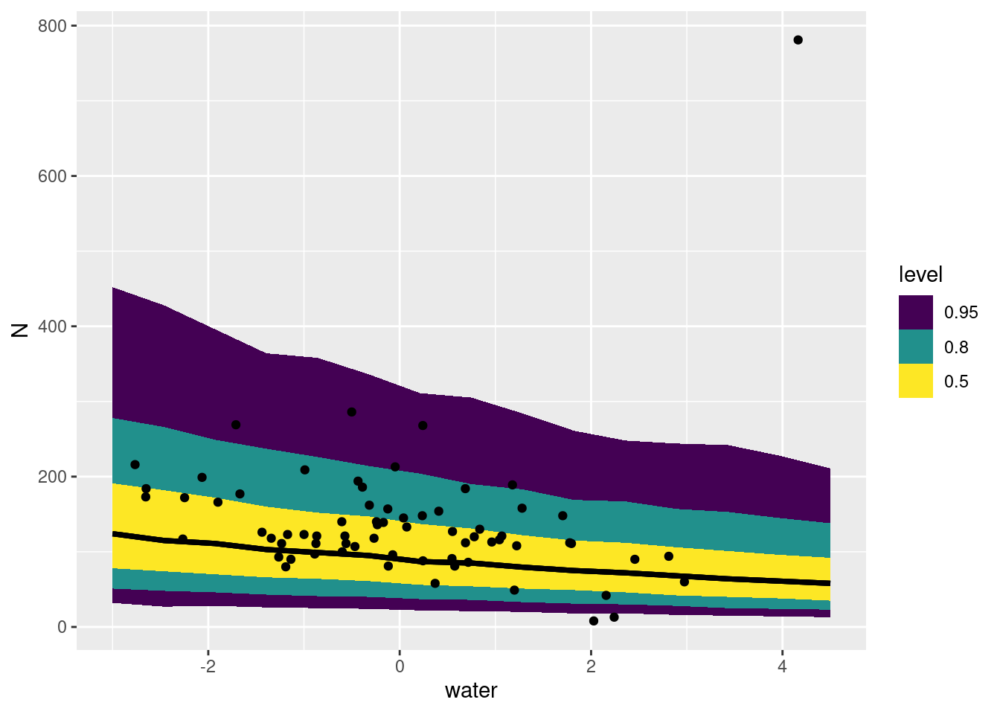

library(palmerpenguins)
suppressPackageStartupMessages(library(dplyr))
library(ggplot2)
library(tidyr)
# library(cmdstanr)
suppressPackageStartupMessages(library(rstan))
rstan_options("auto_write" = TRUE)
options(mc.cores = parallel::detectCores())
library(tidybayes)Models with one level of hierarchy
Some of these things are somewhat like the others.
Bayesian workflow
- Visualize your data
- Decide on your model structure
- Simulate from the model to understand it
- Fit the model to the data
- Plot model predictions to evaluate the fit / draw conclusions
Today’s goal is to look at a couple of different model structures that we saw yesterday.
Load packages and data
Gaussian random intercepts: Penguin body mass
Are populations of penguins on different islands different in their body mass?
The Palmer penguins are found on three different islands. Let’s look at the distribution of body mass of each species on each island.
Plot the data
First a bit of data cleaning and preparation. First we select our variables. For this section we’ll drop NA values in the predictor1. We’ll create a new variable out of the union of the species and island names2 We’ll also change the units of body mass to kilograms. You can always transform a variable to more sensible units!
penguin_mass_island <- penguins |>
select(species, island, body_mass_g) |>
tidyr::drop_na(body_mass_g) |>
tidyr::unite(sp_island, species, island) |>
## center mass and change the units
mutate(mass_kg = (body_mass_g)/1000)
knitr::kable(head(penguin_mass_island))| sp_island | body_mass_g | mass_kg |
|---|---|---|
| Adelie_Torgersen | 3750 | 3.750 |
| Adelie_Torgersen | 3800 | 3.800 |
| Adelie_Torgersen | 3250 | 3.250 |
| Adelie_Torgersen | 3450 | 3.450 |
| Adelie_Torgersen | 3650 | 3.650 |
| Adelie_Torgersen | 3625 | 3.625 |
Let’s visualize the distribution of body sizes for these species+island combinations:
penguin_mass_island |>
ggplot(aes(y = sp_island,
x = mass_kg,
colour = sp_island)) +
geom_jitter(alpha = 0.8, height = 0.1, width = 0) +
scale_color_brewer(palette = "Dark2") +
labs(x = "Mass in kg", y = "Species_Island")
It’s always good to ask some questions about the dataset. Here is a simple one: are the sample sizes equal among the species-island combinations?
penguin_mass_island |>
count(sp_island) |>
knitr::kable()| sp_island | n |
|---|---|
| Adelie_Biscoe | 44 |
| Adelie_Dream | 56 |
| Adelie_Torgersen | 51 |
| Chinstrap_Dream | 68 |
| Gentoo_Biscoe | 123 |
Decide on a model structure
We’ll begin by fitting a model that assumes that body size for each of these five groups is completely independent:
\[ \begin{align} \text{Body mass}_i &\sim \text{Normal}(\mu_i, \sigma_{\text{obs}}) \\ \mu_i &= \bar\beta + \beta_{\text{group}[i]} \\ \bar\beta &\sim \text{Normal}(5, 2) \\ \beta_{\text{group}} &\sim \text{Normal}(0, 1) \\ \sigma_{\text{obs}} &\sim \text{Exponential}(.5) \end{align} \]
Here the subscript \(i\) is just counting the row of the dataset, and \(\text{group}[i]\) means the group (species+island) to which row number \(i\) belongs.
Simulate to understand this model
Here’s a little trick to get group indexes (numbers) from a character vector:
group_names <- unique(penguin_mass_island$sp_island)
group_numbers <- seq_along(group_names)
names(group_numbers) <- group_names
group_numbersAdelie_Torgersen Adelie_Biscoe Adelie_Dream Gentoo_Biscoe
1 2 3 4
Chinstrap_Dream
5 penguin_groupid <- penguin_mass_island |>
mutate(group_id = group_numbers[sp_island])
penguin_groupid# A tibble: 342 × 4
sp_island body_mass_g mass_kg group_id
<chr> <int> <dbl> <int>
1 Adelie_Torgersen 3750 3.75 1
2 Adelie_Torgersen 3800 3.8 1
3 Adelie_Torgersen 3250 3.25 1
4 Adelie_Torgersen 3450 3.45 1
5 Adelie_Torgersen 3650 3.65 1
6 Adelie_Torgersen 3625 3.62 1
7 Adelie_Torgersen 4675 4.68 1
8 Adelie_Torgersen 3475 3.48 1
9 Adelie_Torgersen 4250 4.25 1
10 Adelie_Torgersen 3300 3.3 1
# ℹ 332 more rowsAs you can see, we’re set up now with the names and the indexes we need.
Now we can simulate data and plot it:
ngroup <- length(group_numbers)
overall_mean <- rnorm(1, mean = 5, sd = 2)
group_diffs <- rnorm(n = ngroup, mean = 0, sd = 1)
sigma_obs <- rexp(1, .5)
penguin_pred_obs <- penguin_groupid |>
mutate(fake_mass_avg = overall_mean + group_diffs[group_id],
fake_mass_obs = rnorm(length(fake_mass_avg),
mean = fake_mass_avg,
sd = sigma_obs))
penguin_pred_obs |>
ggplot(aes(y = sp_island,
x = fake_mass_obs,
colour = sp_island)) +
geom_jitter(alpha = 0.8, height = 0.1, width = 0) +
scale_color_brewer(palette = "Dark2")
EXERCISE
Run the above code a few times, trying different prior values.
Write it in Stan
fixed_groups <- stan_model(file = here::here("topics/03_one_random_effect/fixed_groups.stan"),
model_name = "fixed_groups")
fixed_groupsS4 class stanmodel 'anon_model' coded as follows:
data {
int<lower=0> N;
vector[N] y;
int<lower=0> Ngroup;
array[N] int<lower=0, upper=Ngroup> group_id;
}
parameters {
real b_avg;
vector[Ngroup] b_group;
real<lower=0> sigma;
}
model {
y ~ normal(b_avg + b_group[group_id], sigma);
b_group ~ std_normal();
b_avg ~ normal(5, 2);
sigma ~ exponential(.5);
}
generated quantities {
vector[Ngroup] group_averages;
for (k in 1:Ngroup){
group_averages[k] = b_avg + b_group[k];
}
// predict making one new observation per group
vector[Ngroup] one_obs_per_group;
for (k in 1:Ngroup) {
one_obs_per_group[k] = normal_rng(group_averages[k], sigma);
}
} Fit the model
Fitting the model requires arranging the data first, and creating a list which we then feed into Stan.
peng_group_list <- with(penguin_groupid,
list(
N = length(mass_kg),
y = mass_kg,
Ngroup = max(group_id),
group_id = group_id
))
fixed_groups_samples <- sampling(fixed_groups,
data = peng_group_list,
refresh = 0L
)Plot predictions to evaluate results
Let’s begin by plotting the averages for each group.
fixed_groups_samples |>
gather_rvars(group_averages[group_id]) |>
mutate(sp_island = names(group_numbers)[group_id]) |>
ggplot(aes(y = sp_island, dist = .value)) +
stat_pointinterval() +
geom_jitter(data = penguin_mass_island,
aes(y = sp_island,
x = mass_kg,
colour = sp_island),
pch = 21, inherit.aes = FALSE,
alpha = 0.8, height = 0.1, width = 0) +
scale_colour_brewer(palette = "Dark2")
Some things to notice about the code above:
- I’m using my named vector
group_numbersto re-create the columnsp_island. This is my technique for making sure I always use the correct label, but you can do this any way you want. - We use
tidybayes::stat_pointinterval()to summarize the posterior distribution. - we’re adding points from the original data (
penguin_mass_island) withgeom_jitter(). We’re adding noise vertically to make the visualization better, but not adding any horizontal noise.
EXERCISE: plot posterior predictions of observations
Repeat the exercise above using the value of one_obs_per_group. Why are the results different? What additional error is included in these predictions?
SOLUTION
fixed_groups_samples |>
tidybayes::gather_rvars(one_obs_per_group[group_id]) |>
mutate(sp_island = group_names[group_id]) |>
ggplot(aes(y = sp_island,
dist = .value,
colour = sp_island)) +
stat_pointinterval(colour = "black") +
geom_jitter(
aes(y = sp_island,
x = mass_kg,
colour = sp_island),
inherit.aes = FALSE,
alpha = .2, data = penguin_groupid, height = .2, width = 0) +
scale_colour_brewer(palette = "Dark2")
Make it hierarchical
Math
\[ \begin{align} \text{Body mass}_i &\sim \text{Normal}(\mu_i, \sigma_{\text{obs}}) \\ \mu_i &= \bar\beta + \beta_{\text{group}[i]} \\ \bar\beta &\sim \text{Normal}(5, 2) \\ \beta_{\text{group}} &\sim \text{Normal}(0, 1) \\ \sigma_{\text{obs}} &\sim \text{Exponential}(.5) \end{align} \]
\[ \begin{align} \text{Body mass}_i &\sim \text{Normal}(\mu_i, \sigma_{\text{obs}}) \\ \mu_i &= \bar\beta + \beta_{\text{group}[i]} \\ \bar\beta &\sim \text{Normal}(5, 2) \\ \beta_{\text{group}} &\sim \text{Normal}(0, \sigma_{\text{sp}}) \\ \sigma_{\text{obs}} &\sim \text{Exponential}(.5) \\ \sigma_{\text{sp}} &\sim \text{Exponential}(1) \end{align} \]
Simulation of a hierarchical model
EXERCISE
Simulate from the model above. Base your approach on the code for simulation the non-hierarchical version. Remember to simulate one additional number: the standard deviation of group differences
SOLUTION
ngroup <- length(group_numbers)
overall_mean <- rnorm(1, mean = 5, sd = 2)
sigma_group <- rexp(1, .1)
group_diffs <- rnorm(n = ngroup, mean = 0, sd = sigma_group)
sigma_obs <- rexp(1, .5)
penguin_pred_obs <- penguin_groupid |>
mutate(fake_mass_avg = overall_mean + group_diffs[group_id],
fake_mass_obs = rnorm(length(fake_mass_avg),
mean = fake_mass_avg,
sd = sigma_obs))
penguin_pred_obs |>
ggplot(aes(y = sp_island,
x = fake_mass_obs,
colour = sp_island)) +
geom_jitter(alpha = 0.8, height = 0.1, width = 0) +
scale_color_brewer(palette = "Dark2")
Stan
Below I’m comparing the two Stan programs side-by-side. Compare them to the models above!
hierarchical_groups <- stan_model(
file = "topics/03_one_random_effect/hierarchical_groups.stan")fixed_groupsS4 class stanmodel 'anon_model' coded as follows:
data {
int<lower=0> N;
vector[N] y;
int<lower=0> Ngroup;
array[N] int<lower=0, upper=Ngroup> group_id;
}
parameters {
real b_avg;
vector[Ngroup] b_group;
real<lower=0> sigma;
}
model {
y ~ normal(b_avg + b_group[group_id], sigma);
b_group ~ std_normal();
b_avg ~ normal(5, 2);
sigma ~ exponential(.5);
}
generated quantities {
vector[Ngroup] group_averages;
for (k in 1:Ngroup){
group_averages[k] = b_avg + b_group[k];
}
// predict making one new observation per group
vector[Ngroup] one_obs_per_group;
for (k in 1:Ngroup) {
one_obs_per_group[k] = normal_rng(group_averages[k], sigma);
}
} hierarchical_groupsS4 class stanmodel 'anon_model' coded as follows:
data {
int<lower=0> N;
vector[N] y;
int<lower=0> Ngroup;
array[N] int<lower=0, upper=Ngroup> group_id;
}
parameters {
real b_avg;
vector[Ngroup] b_group;
real<lower=0> sigma_obs;
real<lower=0> sigma_grp;
}
model {
y ~ normal(b_avg + b_group[group_id], sigma_obs);
b_group ~ normal(0, sigma_grp);
b_avg ~ normal(5, 2);
sigma_obs ~ exponential(.5);
sigma_grp ~ exponential(1);
}
generated quantities {
vector[Ngroup] group_averages;
for (k in 1:Ngroup){
group_averages[k] = b_avg + b_group[k];
}
// predict making one new observation per group
vector[Ngroup] one_obs_per_group;
for (k in 1:Ngroup) {
one_obs_per_group[k] = normal_rng(group_averages[k], sigma_obs);
}
// difference for a new group
real new_b_group = normal_rng(0, sigma_grp);
// observations from that new group
real one_obs_new_group = normal_rng(b_avg + new_b_group, sigma_obs);
} hierarchical_groups_samples <- sampling(hierarchical_groups,
data = peng_group_list, refresh = 0)hierarchical_groups_samplesInference for Stan model: anon_model.
4 chains, each with iter=2000; warmup=1000; thin=1;
post-warmup draws per chain=1000, total post-warmup draws=4000.
mean se_mean sd 2.5% 25% 50% 75% 97.5% n_eff
b_avg 4.02 0.01 0.36 3.27 3.82 4.01 4.21 4.82 633
b_group[1] -0.31 0.01 0.36 -1.11 -0.51 -0.30 -0.10 0.44 643
b_group[2] -0.30 0.01 0.37 -1.13 -0.50 -0.30 -0.10 0.43 636
b_group[3] -0.32 0.01 0.36 -1.13 -0.52 -0.33 -0.12 0.42 652
b_group[4] 1.06 0.01 0.36 0.24 0.86 1.06 1.26 1.80 641
b_group[5] -0.28 0.01 0.36 -1.10 -0.48 -0.28 -0.08 0.46 648
sigma_obs 0.46 0.00 0.02 0.43 0.45 0.46 0.48 0.50 1764
sigma_grp 0.77 0.01 0.32 0.38 0.54 0.69 0.90 1.61 1230
group_averages[1] 3.71 0.00 0.06 3.58 3.67 3.71 3.75 3.84 4643
group_averages[2] 3.71 0.00 0.07 3.58 3.67 3.71 3.76 3.85 4439
group_averages[3] 3.69 0.00 0.06 3.57 3.65 3.69 3.73 3.81 4485
group_averages[4] 5.07 0.00 0.04 4.99 5.04 5.07 5.10 5.16 4836
group_averages[5] 3.74 0.00 0.05 3.63 3.70 3.74 3.77 3.84 4800
one_obs_per_group[1] 3.70 0.01 0.46 2.79 3.40 3.70 4.00 4.64 3958
one_obs_per_group[2] 3.71 0.01 0.47 2.77 3.40 3.70 4.03 4.59 3963
one_obs_per_group[3] 3.71 0.01 0.46 2.80 3.40 3.70 4.01 4.65 3940
one_obs_per_group[4] 5.07 0.01 0.47 4.15 4.76 5.07 5.38 5.99 4055
one_obs_per_group[5] 3.74 0.01 0.47 2.81 3.43 3.73 4.06 4.65 3707
new_b_group -0.02 0.01 0.85 -1.72 -0.49 -0.01 0.44 1.68 3832
one_obs_new_group 4.00 0.02 1.04 1.94 3.39 4.02 4.61 6.13 2571
lp__ 88.46 0.07 2.19 83.23 87.18 88.83 90.07 91.63 1094
Rhat
b_avg 1.01
b_group[1] 1.01
b_group[2] 1.01
b_group[3] 1.00
b_group[4] 1.01
b_group[5] 1.01
sigma_obs 1.00
sigma_grp 1.00
group_averages[1] 1.00
group_averages[2] 1.00
group_averages[3] 1.00
group_averages[4] 1.00
group_averages[5] 1.00
one_obs_per_group[1] 1.00
one_obs_per_group[2] 1.00
one_obs_per_group[3] 1.00
one_obs_per_group[4] 1.00
one_obs_per_group[5] 1.00
new_b_group 1.00
one_obs_new_group 1.00
lp__ 1.00
Samples were drawn using NUTS(diag_e) at Wed May 7 06:57:20 2025.
For each parameter, n_eff is a crude measure of effective sample size,
and Rhat is the potential scale reduction factor on split chains (at
convergence, Rhat=1).hierarchical_groups_samples |>
tidybayes::gather_rvars(b_group[group_id],
new_b_group) |>
mutate(sp_island = group_names[group_id],
sp_island = if_else(is.na(sp_island),
true = "New Group",
false = sp_island)) |>
ggplot(aes(y = sp_island,
dist = .value,
colour = sp_island)) +
stat_pointinterval()
hierarchical_groups_samples |>
tidybayes::gather_rvars(one_obs_per_group[group_id],
one_obs_new_group) |>
mutate(sp_island = group_names[group_id],
sp_island = if_else(is.na(sp_island),
true = "New Group",
false = sp_island)) |>
ggplot(aes(y = sp_island,
dist = .value,
colour = sp_island)) +
stat_pointinterval() +
geom_point(aes(y = sp_island,
x = mass_kg,
colour = sp_island),
inherit.aes = FALSE,
alpha = .7,
data = penguin_groupid,
position = position_jitter(width = 0, height = .2))Exercises
- Try leaving out a group and refitting the hierarchical model. Are the predictions for the missing group accurate?
- There are other categorical predictors in the dataset. Try including
yearas a part of the group-creating factor (i.e. in the call tounite()above). What changes? - Modify the
generated quantitiesblock to simulate a fake observation for EVERY row of the dataset. This opens the possibility of usingbayesplotto make predictions. Look back at the code from Day 1 and create a posterior predictive check for both models. (e.g. usingppc_dens_overlay) - We could perhaps have used
sexas a grouping factor, butsexhas missing values in it! Why is this a problem for this kind of model? What would it take to address that? (Discussion only; missing values are unfortunately outside the scope of the class!)
Observation-level random effects: Mite abundance
What is the question?
Let’s write a model to answer the question:
How does the total abundance of the mite community change as water content increases?
Express this in Math
Here’s a partially complete model for species richness over time
\[ \begin{align} \text{S}_i &\sim \text{Poisson}(e^a) \\ a &= \bar\beta + \beta_{\text{water}} \cdot \text{water}_i \\ \bar\beta &\sim \text{Normal}(?, ?) \\ \beta_{\text{water}} &\sim \text{Normal}(?, ?) \\ \end{align} \]
EXERCISE
Simulate from this model, and look at your simulations to decide on a reasonable prior for the data.
SOLUTION
n <- 30
water <- seq(from = -5, to = 5, length.out = n)
b0 <- rnorm(1, mean = log(17), sd = .3)
b1 <- rnorm(1, mean = 0, sd = .2)
S <- rpois(n, lambda = exp(b0 + b1*water))
plot(water, S)
Data preparation & visualization
First we need to load and prepare the data:
data(mite, package = "vegan")
data("mite.env", package = "vegan")
# combine data and environment
mite_data_long <- mite |>
tibble::rownames_to_column(var = "site_id") |>
bind_cols(mite.env) |>
pivot_longer(Brachy:Trimalc2,
names_to = "spp", values_to = "abd")First let’s transform the mite dataset into a dataframe of total community abundance (N) per site. We’ll also standardize the water content while we’re at it:
mite_community_abd <- mite_data_long |>
group_by(site_id, WatrCont) |>
summarize(N = sum(abd)) |>
ungroup() |>
mutate(water_c = (WatrCont - mean(WatrCont))/100)`summarise()` has grouped output by 'site_id'. You can override using the
`.groups` argument.knitr::kable(head(mite_community_abd))| site_id | WatrCont | N | water_c |
|---|---|---|---|
| 1 | 350.15 | 140 | -0.6048571 |
| 10 | 220.73 | 166 | -1.8990571 |
| 11 | 134.13 | 216 | -2.7650571 |
| 12 | 405.91 | 213 | -0.0472571 |
| 13 | 243.70 | 177 | -1.6693571 |
| 14 | 239.51 | 269 | -1.7112571 |
We get a nice histogram of community abundance, and a clear negative relationship with water volume:
mite_community_abd |>
ggplot(aes(x = N)) +
geom_histogram()`stat_bin()` using `bins = 30`. Pick better value with `binwidth`.mite_community_abd |>
ggplot(aes(x = water_c, y = N)) +
geom_point()

Write the model in Stan and estimate it
This model will have a structure very similar to previous ones we’ve seen. The main difference is the use of the poisson_log function:
poisson_regression <- stan_model(
file = "topics/03_one_random_effect/poisson_regression.stan",
model_name = "poisson_regression")recompiling to avoid crashing R sessionpoisson_regressionS4 class stanmodel 'poisson_regression' coded as follows:
data {
int<lower=0> N;
vector[N] water;
array[N] int y;
// for prediction
int<lower=0> Npred;
vector[Npred] water_pred;
}
parameters {
real b_avg;
real b_water;
}
model {
y ~ poisson_log(b_avg + b_water * water);
b_water ~ normal(0, .2);
b_avg ~ normal(0, .3);
}
generated quantities {
array[N] int fake_obs;
for (i in 1:N){
fake_obs[i] = poisson_log_rng(b_avg + b_water * water[i]);
}
// confidence interval for the line
vector[Npred] line_avg;
line_avg = exp(b_avg + b_water * water_pred);
// prediction interval for the line
array[Npred] int line_obs;
for (j in 1:Npred){
line_obs[j] = poisson_rng(line_avg[j]);
}
}
Built in Stan functions
Stan has a lot of built-in functions to facilitate modelling. For example the log link function is so common that there is a specialized likelihood function just for that, poisson_log. And there’s an even more efficient version called poisson_log_glm. I didn’t use it here because I wanted to code to closely match the equations. You can read about these functions (and much more!) in the amazing Stan manual
Using a now-familiar workflow, we feed the data into the model:
water_for_pred <- seq(from = -3, to = 4.5, length.out = 15)
abd_data_list <- list(N = length(mite_community_abd$N),
water = mite_community_abd$water_c,
y = mite_community_abd$N,
Npred = 15,
water_pred = water_for_pred)
poisson_regression_sample <- sampling(
poisson_regression,
data = abd_data_list,
refresh = 0)Plot the model to see if it fits well
poisson_regression_sample |>
tidybayes::gather_rvars(line_obs[i]) |>
mutate(water = water_for_pred) |>
ggplot(aes(x = water, dist = .value)) +
stat_lineribbon() +
geom_point(aes(x = water_c, y = N),
data = mite_community_abd,
inherit.aes = FALSE) +
scale_fill_brewer(palette = "Greens")
fake_obs_S <- rstan::extract(poisson_regression_sample, pars = "fake_obs")
bayesplot::ppc_dens_overlay(y = mite_community_abd$N,
yrep = head(fake_obs_S$fake_obs, 50))

Remember, on the left we are plotting the Prediction interval here: it’s showing the distribution of probable observations according to the model. Notice that the the model predicts much narrower variation than we really find!
On the right hand side we have the posterior predictive check, which once again shows that the model is overconfident and predicts a range of observations that are far too narrow.
EXERCISE
Discuss with your neighbours: would you trust this model? Would you publish it? The technical name for this phenomenon is “overdisperson”. Have you checked for this in previous count models you’ve done?
Add a random effect for every individual observation in the model. Begin by writing the mathematical notation for this new model!
fit the model and re-create the two figures above. What do you notice?
- Which model is more trustworthy?
- look at the slope in the new model. Is it different?
SOLUTION
Mathematical notation
\[ \begin{align} \text{S}_i &\sim \text{Poisson}(e^a) \\ a &= \bar\beta + \beta_{\text{water}} \cdot \text{water}_i + \text{site}_i\\ \bar\beta &\sim \text{Normal}(?, ?) \\ \beta_{\text{water}} &\sim \text{Normal}(?, ?) \\ \text{site} &\sim \text{Normal}(?, \sigma) \\ \sigma &\sim \text{Exponential}(?) \end{align} \]
Stan code
Write the model
poisson_regression_overdisp <- stan_model(
file = "topics/03_one_random_effect/poisson_regression_overdisp.stan",
model_name = "poisson_regression_overdisp")recompiling to avoid crashing R sessionpoisson_regression_overdispS4 class stanmodel 'poisson_regression_overdisp' coded as follows:
data {
int<lower=0> N;
vector[N] water;
array[N] int y;
// for prediction
int<lower=0> Npred;
vector[Npred] water_pred;
}
parameters {
real b_avg;
real b_water;
real<lower=0> sigma_site;
vector[N] site_intercepts;
}
model {
b_avg ~ normal(0, .3);
b_water ~ normal(0, .2);
site_intercepts ~ normal(0, sigma_site);
sigma_site ~ exponential(.5);
y ~ poisson_log(b_avg + b_water * water + site_intercepts);
}
generated quantities {
array[N] int fake_obs;
for (i in 1:N){
fake_obs[i] = poisson_log_rng(b_avg + b_water * water[i] + site_intercepts[i]);
}
// confidence interval for the line
// prediction interval for the line
vector[Npred] new_site_intercepts;
array[Npred] int line_obs;
for (j in 1:Npred){
new_site_intercepts[j] = normal_rng(0, sigma_site);
}
vector[Npred] line_avg;
line_avg = exp(b_avg + b_water * water_pred + new_site_intercepts);
for(k in 1:Npred){
line_obs[k] = poisson_rng(line_avg[k]);
}
} Sample it
poisson_regression_overdisp_sample <- sampling(
poisson_regression_overdisp,
data = abd_data_list, refresh = 0
)Warning: The largest R-hat is 1.08, indicating chains have not mixed.
Running the chains for more iterations may help. See
https://mc-stan.org/misc/warnings.html#r-hatWarning: Bulk Effective Samples Size (ESS) is too low, indicating posterior means and medians may be unreliable.
Running the chains for more iterations may help. See
https://mc-stan.org/misc/warnings.html#bulk-essWarning: Tail Effective Samples Size (ESS) is too low, indicating posterior variances and tail quantiles may be unreliable.
Running the chains for more iterations may help. See
https://mc-stan.org/misc/warnings.html#tail-essfake_obs_overdisp_S <- rstan::extract(poisson_regression_overdisp_sample, pars = "fake_obs")
bayesplot::ppc_dens_overlay(y = mite_community_abd$N,
yrep = head(fake_obs_overdisp_S$fake_obs, 50))
poisson_regression_overdisp_sample |>
tidybayes::gather_rvars(line_obs[i]) |>
mutate(water = water_for_pred) |>
ggplot(aes(x = water, dist = .value)) +
stat_lineribbon() +
geom_point(aes(x = water_c, y = N),
data = mite_community_abd,
inherit.aes = FALSE)

Bonus exercises
Compare the slope estimates between the two poisson models above (possibly in the same figure). What happened here?
Another great way to model overdispersion is via the Negative Binomial distribution. Look at the Stan documentation for neg_binomial_2_log and adapt your model to use it (don’t forget to drop the random effect when you do!).
EXPERIMENTAL: replace the normal distribution for the random observation-level effect with the student_t distribution, to help with that one extreme datapoint! how does the slope change?
Footnotes
dropping NA values is not always the best idea! I’m doing it here to create a focused example. Bayes gives us other options for working with missing values, including modelling them directly.↩︎
again, this is slightly contrived for the sake of making a clean example! normally you’d most likely treat these two variables separately.↩︎